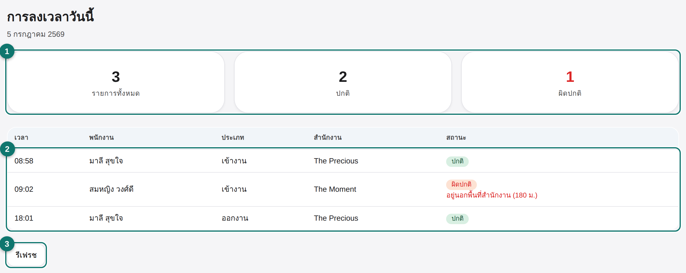
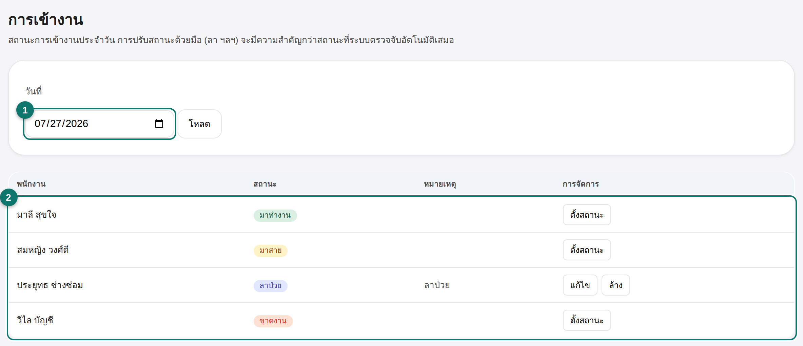
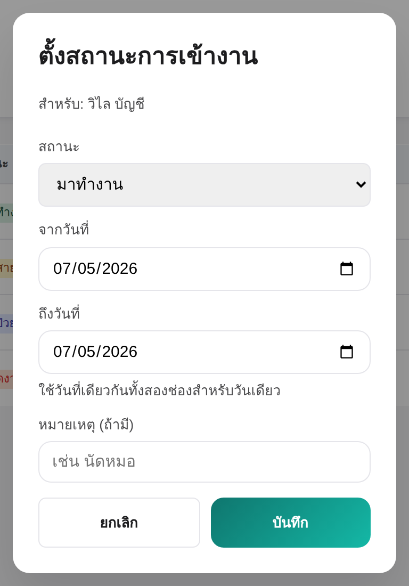
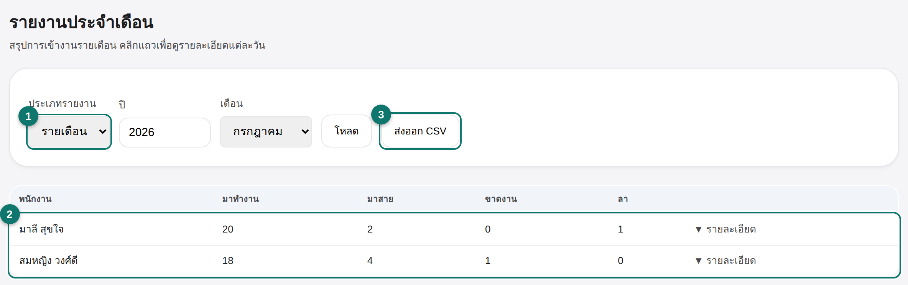
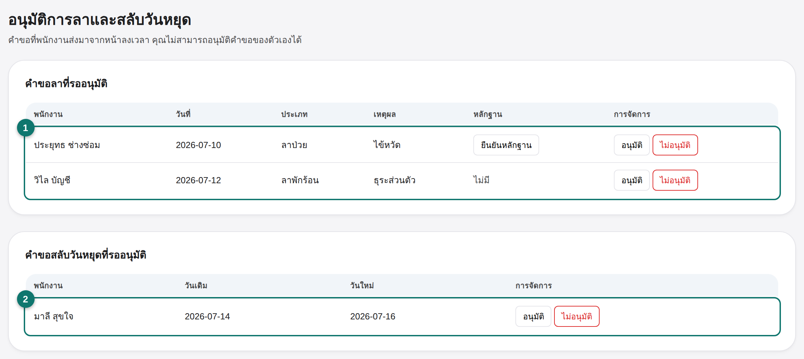
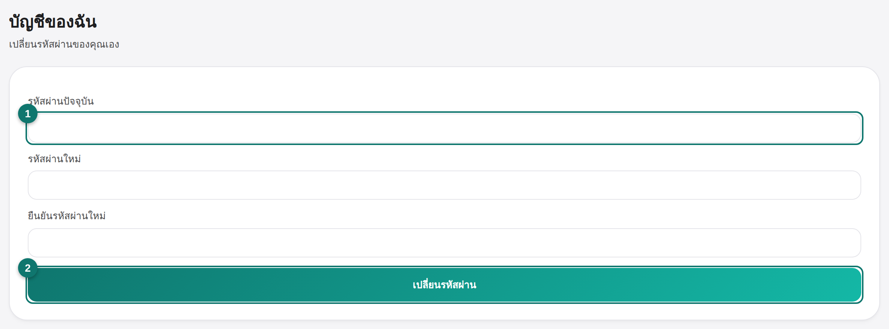

คู่มือบุคคล · HR · Front desk
บุคคล — ลงเวลา การเข้างาน และอนุมัติการลา
คู่มือนี้สำหรับพนักงานต้อนรับ (front desk) — ครอบคลุมเฉพาะส่วนที่คุณเข้าถึงได้ในหน้า
บุคคล: ดูการลงเวลาวันนี้ ตรวจ/ปรับสถานะการเข้างาน ดูรายงานประจำเดือน อนุมัติคำขอลาและสลับวันหยุด
และเปลี่ยนรหัสผ่านของคุณเอง
ไม่ครอบคลุมในคู่มือนี้: แท็บ พนักงาน · บทบาท ·
ข้อร้องเรียน & ใบเตือน — สามแท็บนี้เห็นได้เฉพาะเจ้าของกิจการเท่านั้น หน้าจอของคุณจะไม่มีแท็บเหล่านี้เลย
1
การลงเวลาวันนี้Today's check-ins
เปิดหน้า บุคคล จากเมนูด้านบน แท็บแรกที่เห็นคือ ลงเวลาวันนี้ —
รายการลงเวลาเข้า-ออกงานของพนักงานทุกคนในวันนี้

- การ์ดสรุป — รายการทั้งหมด ปกติ และผิดปกติของวันนี้
- ตารางรายการ — เวลา พนักงาน ประเภท (เข้า/ออกงาน) สำนักงาน และสถานะ
แถวที่เป็น ผิดปกติ จะโชว์เหตุผล เช่น ลงเวลานอกพื้นที่สำนักงาน
- รีเฟรช — กดเพื่อดึงรายการล่าสุด
2
การเข้างาน & ปรับสถานะAttendance & overrides
แท็บ การเข้างาน แสดงสถานะรายวันของพนักงานทุกคน (มาทำงาน/มาสาย/ขาดงาน/ลา)
เลือกวันที่แล้วกด โหลด

- เลือกวันที่ — ดูสถานะของวันอื่นย้อนหลังหรือล่วงหน้าได้
- ตารางพนักงาน — กด ตั้งสถานะ เพื่อปรับสถานะด้วยมือ (เช่น บันทึกวันลา)
แถวที่ปรับไว้แล้วจะมีปุ่ม แก้ไข / ล้าง แทน
กด ตั้งสถานะ เพื่อเปิดหน้าต่างปรับสถานะ — เลือกสถานะ ช่วงวันที่ (ใช้วันเดียวกันทั้งสองช่องสำหรับวันเดียว)
และหมายเหตุถ้ามี

สถานะที่ปรับด้วยมือ (เช่น ลา) จะมีความสำคัญกว่าสถานะที่ระบบตรวจจับอัตโนมัติเสมอ
3
รายงานประจำเดือนMonthly report
แท็บ รายงานประจำเดือน สรุปการเข้างานทั้งเดือน (หรือทั้งปี) ของพนักงานทุกคน

- ประเภทรายงาน — เลือก รายเดือน หรือ รายปี พร้อมปี/เดือน แล้วกดโหลด
- ตารางสรุป — จำนวนวันมาทำงาน มาสาย ขาดงาน และลา ต่อพนักงาน 1 คน
คลิกแถวเพื่อดูรายละเอียดรายวัน
- ส่งออก CSV — ดาวน์โหลดรายงานเป็นไฟล์เพื่อเก็บหรือส่งต่อ
4
อนุมัติการลาและสลับวันหยุดLeave & swap approvals
แท็บ อนุมัติการลา & สลับวันหยุด รวมคำขอทั้งหมดที่พนักงานส่งมาจากหน้าลงเวลาของตัวเอง

- คำขอลาที่รออนุมัติ — ลาป่วยต้องมีหลักฐาน กด ยืนยันหลักฐาน ก่อนได้ถ้าต้องการตรวจสอบ
จากนั้นกด อนุมัติ หรือ ไม่อนุมัติ
- คำขอสลับวันหยุดที่รออนุมัติ — เทียบวันเดิมกับวันใหม่ แล้วกด อนุมัติ หรือ ไม่อนุมัติ
ข้อจำกัด: คุณไม่สามารถอนุมัติคำขอลาหรือสลับวันหยุดของตัวเองได้
แท็บ บัญชีของฉัน ใช้เปลี่ยนรหัสผ่านของคุณเอง

- รหัสผ่านปัจจุบัน — กรอกรหัสผ่านที่ใช้อยู่ตอนนี้
- เปลี่ยนรหัสผ่าน — กรอกรหัสผ่านใหม่และยืนยัน แล้วกดเปลี่ยนรหัสผ่าน